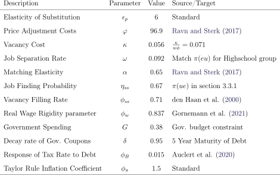

26Note if profits were not held by firms then the goods market condition would be Ct+Gt = Y t−κvt−2Y t. In particular, since firm profits are Dt = Y t−wtNt−κvt−2Y t, then the goods market condition would become Ct + Gt = wtNt + Dt = Y t − κvt −2Y t.